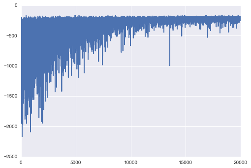

Bayesian Neural Network in PyMC3¶
- 2016 by Thomas Wiecki
In [1]:
import sys, os
#sys.path.insert(0, '/Users/taku-y/git/github/pymc-devs/pymc3/')
%matplotlib inline
import pymc3 as pm
import theano.tensor as T
import theano
import sklearn
import numpy as np
import matplotlib.pyplot as plt
from sklearn import datasets
from sklearn.preprocessing import scale
from sklearn.cross_validation import train_test_split
from sklearn.datasets import make_moons, make_circles, make_classification
import seaborn as sns
In [2]:
import theano
theano.__version__
Out[2]:
'0.8.2'
In [3]:
pm.__version__
Out[3]:
'3.0'
In [4]:
theano.config.floatX
Out[4]:
'float32'
In [5]:
#X, Y = datasets.make_blobs(n_samples=200, n_features=2, centers=2, cluster_std=3.0,
# center_box=(-5.0, 5.0), shuffle=True, random_state=None)
X, Y = make_moons(noise=0.2, random_state=0, n_samples=1000)
X = scale(X)
X_train, X_test, Y_train, Y_test = train_test_split(X, Y, test_size=.5)
In [6]:
plt.scatter(X[Y==0, 0], X[Y==0, 1])
plt.scatter(X[Y==1, 0], X[Y==1, 1], color='r')
Out[6]:
<matplotlib.collections.PathCollection at 0x7ff0ea54ea58>

In [7]:
def Ordered(name, var, model=None):
order = T.constant(list(range(var.tag.test_value.shape[1])))
return pm.Potential(
name,
T.switch(T.eq(T.argsort(T.sum(var, axis=0)), order), 0, -np.inf),
model=model
)
In [8]:
# Turn inputs and outputs into shared variables so that we can change them later
ann_input = theano.shared(X_train)
ann_output = theano.shared(Y_train)
n_hidden = 5
with pm.Model() as neural_network:
# Below we require an ordering of the summed weights, thus initialize in this order
init_1 = np.random.randn(X.shape[1], n_hidden)
init_1 = init_1[:, np.argsort(init_1.sum(axis=0))]
init_2 = np.random.randn(n_hidden, n_hidden)
init_2 = init_2[:, np.argsort(init_2.sum(axis=0))]
init_out = np.random.randn(n_hidden)
init_out = init_out[np.argsort(init_out)]
# Weights from input to hidden layer
weights_in_1 = pm.Normal('w_in_1', 0, sd=1, shape=(X.shape[1], n_hidden),
testval=init_1)
#biases_1 = pm.Normal('bias_1', 0, sd=1)
# Weights from 1st to 2nd layer
weights_1_2 = pm.Normal('w_1_2', 0, sd=1, shape=(n_hidden, n_hidden),
testval=init_2)
#biases_2 = pm.Normal('bias_2', 0, sd=1)
# Weights from hidden layer to output
weights_1_out = pm.Normal('w_1_out', 0, sd=1, shape=(n_hidden,),
testval=init_out)
# As the hidden neurons are interchangeable this induces a symmetry in the posterior.
# This is my first attempt at breaking that symmetry. I'm not sure if it's actually
# correct or if there is a better way to do it. It seems to work for this toy model.
#Ordered('order_potential', weights_in_1)
#Ordered('order_potential2', weights_1_2)
# Build neural-network
a1 = T.dot(ann_input, weights_in_1)
act_1 = T.tanh(a1)
a2 = T.dot(act_1, weights_1_2)
act_2 = T.tanh(a2)
act_out = T.dot(act_2, weights_1_out)
out = pm.Bernoulli('out',
T.nnet.sigmoid(act_out),
observed=ann_output)
Estimation with ADVI¶
In [9]:
means, sds, elbos = pm.variational.advi(model=neural_network, n=20000, accurate_elbo=False)
Iteration 0 [0%]: ELBO = -1210.76
Iteration 2000 [10%]: ELBO = -1025.7
Iteration 4000 [20%]: ELBO = -237.11
Iteration 6000 [30%]: ELBO = -347.56
Iteration 8000 [40%]: ELBO = -236.3
Iteration 10000 [50%]: ELBO = -235.91
Iteration 12000 [60%]: ELBO = -215.81
Iteration 14000 [70%]: ELBO = -218.04
Iteration 16000 [80%]: ELBO = -211.0
Iteration 18000 [90%]: ELBO = -219.62
Finished [100%]: ELBO = -211.43
In [10]:
plt.plot(elbos)
Out[10]:
[<matplotlib.lines.Line2D at 0x7ff0cc130080>]
